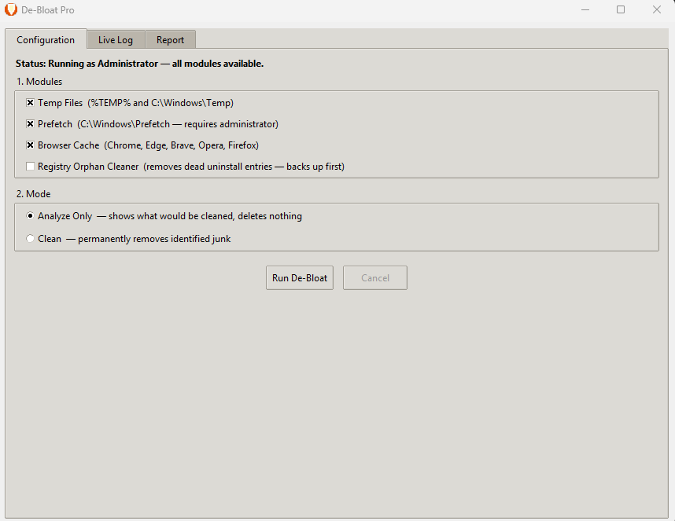

Free Windows System Cleaner
The transparent, safe alternative to CCleaner. Cleans junk files, browser cache, and dead registry entries — with backups before every change, and zero telemetry.
Advertisement
Why not CCleaner?
CCleaner has had a documented malware incident (2017), introduced background telemetry without consent, and is laden with upsell prompts. De-Bloat Pro was built from scratch to do the same job — transparently, safely, and without any network code at all.
Cleaning Modules
Removes junk from %TEMP%, %USERPROFILE%\AppData\Local\Temp, and C:\Windows\Temp (admin). Uses deep scanning to catch files in subdirectories.
Clears Windows Prefetch (C:\Windows\Prefetch) to remove launch traces for applications that no longer exist. Requires administrator access.
Clears cache for Chrome, Edge, Brave, Opera, and Firefox (all profiles). Uses full directory traversal to catch files in cache subdirectories that other tools miss.
Scans the Windows Uninstall registry hive for entries whose InstallLocation points to a path that no longer exists on disk — the leftover ghost entries from uninstalled software.
Run any module in Analyze mode first. Everything that would be cleaned is shown in the live log — no files are touched. Switch to Clean mode only when you're satisfied.
Before deleting any registry entry, De-Bloat Pro exports it to a .reg file in your home folder. If deletion is skipped, the entry is never removed — safety is unconditional.
The app checks for administrator privileges at launch. If not elevated, the Prefetch module is automatically disabled. A "Restart as Administrator" button is shown when needed.
A dark-themed console shows every action in real time. When finished, a full summary report is generated — and can be saved to a .txt file for your records.
Screenshot

Advertisement
Download
Single-file executable with UAC manifest embedded. Windows will prompt for administrator access when you run it — that's expected and required for full functionality.
⬇ Download DeBloatPro.exeAlso available as a Setup Wizard installer • View source on GitHub
⚠ Windows SmartScreen may show a warning on first run. Click More info → Run anyway.
The full source code is publicly available for review on GitHub.
System Requirements
| Component | Requirement |
|---|---|
| Operating System | Windows 10 or Windows 11 (64-bit) |
| Architecture | x64 (Intel or AMD) |
| Disk space | ~25 MB (including temp files during first run) |
| Python | Not required — self-contained executable |
| Internet connection | Not required |
| Administrator rights | Required for Prefetch & Windows\Temp cleaning; optional for all other modules |
| Registry backup location | %USERPROFILE%\DeBloatPro_Backups\ (created automatically) |
FAQ
C:\Windows\Temp and C:\Windows\Prefetch requires administrator privileges because they are system-owned directories. If you decline the UAC prompt, those two modules are automatically disabled — all other modules (user temp files, browser cache, registry) still work normally..reg file in %USERPROFILE%\DeBloatPro_Backups\. To restore it, simply double-click the corresponding .reg file and confirm the import. It's a one-click restore.